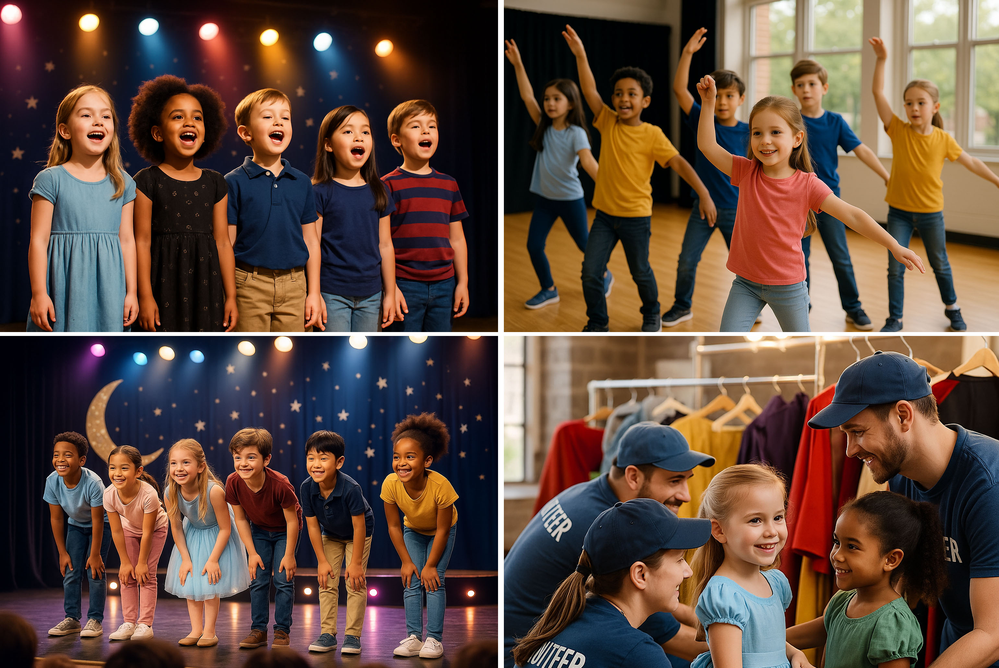

Programs & Classes
Acting Foundations

Acting Foundations introduces students to voice, movement, character building, and improvisation. Each session ends with a short in-class performance so friends and family can see what the students have been working on.
Musical Theater Workshop
Our Musical Theater Workshop combines singing, dancing, and acting into one high energy experience. Students learn ensemble numbers, stage presence, and how to tell a story through music.
Backstage Tech Lab
Not every student wants to be in the spotlight. Backstage Tech Lab is for those who love gadgets, tools, and creativity behind the scenes.
Students in Tech Lab Learn How To:
- Design and build simple set pieces
- Experiment safely with basic stage lighting looks
- Create sound effects and simple soundscapes
- Collaborate with directors and performers during rehearsals